Тайны бумажных денег : В гостях у царя зверей

Животный мир Черного континента настолько богат и разнообразен, что только одно перечисление названий населяющих Африку зверей и птиц вылилось бы в написание целой книги. Там можно встретить не только всех представителей так называемой большой пятерки — льва, леопарда, слона, носорога и буйвола, но и самых опасных их соплеменников — бегемота и крокодила, на чью долю приходится большая часть человеческих жертв Африки…
Однако эта глава посвящается царю зверей, одно из самых изысканных банкнотных изображений которого помещено на купюре ЮАР номиналом в 50 рандов 1999 г. (рис. 183).
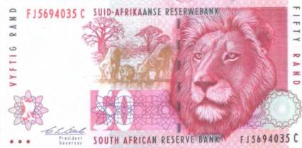
Согласитесь, что трудно найти более выразительный портрет властелина животного мира. В нем куда больше царственного, чем во всех остальных монархах вместе взятых.
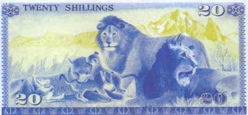
На заднем плане рисунка — силуэты двух молодых львиц и совсем еще маленького наследника звериного трона. Уже по тому, как животные пьют, а лучше сказать, лакают, видно, что они принадлежат к семейству кошачьих.
Африканский лев не только один из самых красивых, но и один из самых опасных представителей фауны материка. Не зря устроители гладиаторских боев в Древнем Риме платили за этих хищников дороже всего. На аренах амфитеатров они были «гвоздем программы». Кстати, их прекращали кормить уже за несколько дней до «выступления». И тогда схватка с человеком получалась наиболее эффектной.
На кенийской банкноте номиналом в 20 шиллингов 1978 г. — не совсем типичное львиное семейство (рис. 184).
Здесь представлены два самца и самка с детенышами. Обычно состав семьи у этого зверя прямо противоположный, то есть несколько женских особей с подрастающим поколением и один матерый самец-паша. Прозвище «паша» в отношении львов-самцов появилось неспроста. Дело в том, что самцы ред ко принимают участие в добывании пищи. Охотой в основном занимаются самки. Но когда очередь доходит до дележа добычи, глава семейства тут как тут. При этом он претендует на самый лучший кусок и насыщается первым. Только после этого к трапезе могут приступать львицы и котята.
На оборотной стороне 5000 франков Руанды 1994 г. — лев-одиночка (рис. 185).
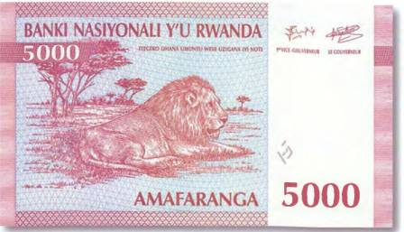
Зачастую это молодые здоровые львы, которые еще не определились с границами своего ревира. Борьба за сферу влияния у царя зверей нередко заканчивается гибелью одного из претендентов. Оно и понятно, какой же уважающий себя лев пожелает делить свои угодья с чужаком, а уж тем более согласится уступить неизвестному претенденту на «трон» свой гарем. «Смена власти», кстати, почти всегда плачевно сказывается на потомстве побежденного. Новый вожак практически никогда не оставляет в живых детенышей своего предшественника. Исключения крайне редки.
Статный зверь с богатой гривой смотрит с 50-франковой купюры Демократической Республики Конго 1962 г. (рис. 186).
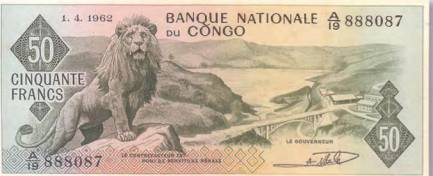
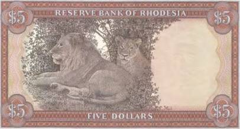
В свое время африканскому льву тоже приходилось нелегко. Начало и середина XX в. отмечены бесконтрольным отстрелом этих свободолюбивых животных. И в случае со львом можно говорить о сотнях, если не тысячах добытых охотниками экземпляров. Таким образом, некоторые области Африки на десятилетия были лишены его «царственного» присутствия. Были случаи, когда богатые европейцы, американцы или азиаты специально прилетали на денек-другой в Африку, чтобы только получить сомнительное удовольствие от стрельбы по львам (как, впрочем, и другим животным африканских саванн), а затем сфотографироваться на фоне экзотического трофея. Описаниями таких подвигов буквально пестрели провинциальные газетенки Соединенных Штатов Америки 50-70-х гг. прошлого века.
На 5 долларах Родезии за 1978 г. пара львов запечатлена в сени деревьев (рис. 187).
Звери обычно отдыхают в подобных тенистых уголках, скрываясь от убийственного полуденного солнца.
В середине XX в. работники франкфуртского зоопарка проводили наблюдение в клетках со львами. Они решили выяснить, сколько времени хищники уделяют сну. Результаты наблюдений оказались самыми неожиданными. В зависимости от возраста и пола львы спали от 10 до 15 часов в сутки. Помимо того, они еще и умудрялись продремать от одного до четырех часов дополнительно.
Вниманием общественности к проблемам сохранения и спасения животного мира африканского континента мы в не малой степени обязаны исследователям, фотографам и съемочным группам послевоенного времени, которые, пренебрегая всеми трудностями и опасностями, связанными с работой в тяжелейших условиях Африки, донесли до остального населения земли всю специфику возникшей ситуации.
Демократическая Республика Конго с момента своего рождения ввела в обращение не одну купюру, посвященную царю зверей. Так, на бону в 20 франков 1997 г. лев попал даже дважды. Один раз его изображение присутствует на ее лицевой стороне (рис. 188). А другое — на обратной.
Один из первых послевоенных исследователей и фотографов животного мира Африки как-то написал: «Если уж родиться на свет львом, то нужно постараться, чтобы твоей родиной стал Серенгети. И именно в районе холмов Банаги. Здесь масса дичи, а из-за нехватки воды и обилия малярийных комаров люди там никогда не селились».
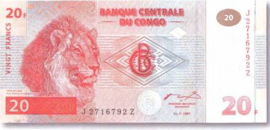
Национальный парк «Серенгети» — первый в Танзании — не зря считают настоящим раем для львов, а к тому же лучшим заповедником в мире. Создан он был в 1951 г. британскими колониальными властями и охватывает территорию в 15 тыс. км .
Лев из «Серенгети» замер на танзанийской банкноте в 2000 шиллингов 2003 г. (рис. 189). Можно подумать, что он охотится. Или, по крайней мере, наблюдает за тем, как это делают его львицы.
До того как англичане задумались над созданием этого во всех отношениях замечательного резервата, в Серенгети охотились все кому не лень. Наиболее удачливые стрелки с одного только сафари возвращались с десятками львиных хвостов. Какой толк от такого странного трофея, спросите вы? Все очень просто. Легче транспортировать 50 хвостов, чем 50 шкур. Во всяком случае так считали те, кто со спокойной совестью изводил африканскую живность.
По подсчетам ученых, на сегодняшний день в национальном парке «Серенгети» обитает около 3000 львов, в том числе и потомки тех двух, что притаились на банковском билете Танзании в 100 шиллингов 1966 г. (рис. 190).
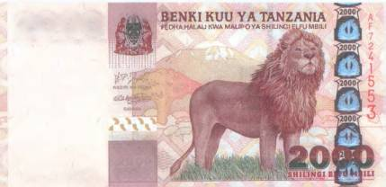
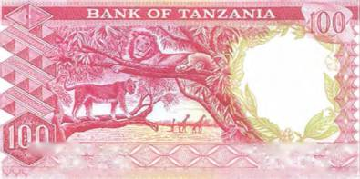
В 1930-х гг. для фотографирования диких львов стали применять не лишенный оригинальности трюк. К автомобилю привязывали мертвую зебру и уже с этой приманкой приближались к животным. Фокус срабатывал практически всегда. И пока хищники лакомились мясом, люди торопились отщелкать как можно больше кадров.
И все же не стоит забывать, что лев — это в первую очередь опасный хищник. В прежние времена нападение львов на домашний скот и даже на человека было делом довольно обычным. Но если на коз и коров нападали здоровые животные, которые были вынуждены перейти на «биопродукты» по вине, скажем, засухи или падежа диких копытных, то людоедами становились в основном старые и больные животные. Впрочем, имели место и исключительные случаи. Так в 1955–1956 гг. в Уганде львы разорвали 45 человек. А все потому, что браконьеры серьезно сократили поголовье антилоп.
Интересное изображение льва и львицы присутствует на немецкой колониальной боне номиналом в 5 рупий 1905 г. (рис. 191).
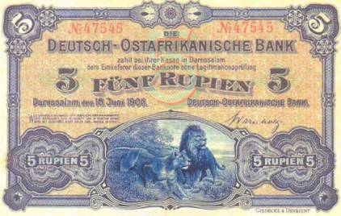
В 1996 г. увидел свет американский мистический триллер «Призрак и тьма». Речь там велась о том, как два льва-людоеда долгое время терроризировали жителей одного местечка в Кении. При этом под угрозой находилось строительство важной железнодорожной ветки.
Сюжет этого триллера с Вэлом Кильмером и Майклом Дугласом в главных ролях базируется на реальных событиях, которые происходили в 1898 г. Работа над железнодорожной магистралью, соединяющей Кению с соседней Угандой, и в самом деле была омрачена жуткими смертями. Пара львов-людоедов (оба самцы!) убила в общей сложности 28 человек. А под конец и инспектора путей сообщения, который, теряя людей, объявил им войну. Хищники разорвали его прямо в засаде, которую он им устроил, спрятавшись в железнодорожном вагоне. По всей видимости, несчастный элементарно заснул «на посту».
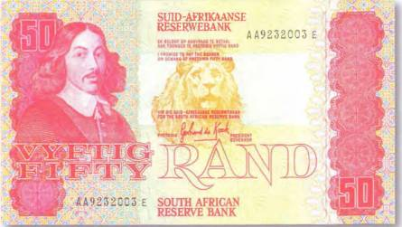
В фильме львам-убийцам приписывали прямо-таки демонические черты. А аборигены и вовсе считали их порождением дьявола. Хотя в поведении этих двух самцов действительно хватало странностей, и далеко не все поддавалось разумному объяснению.
В центре южноафриканской боны в 50 рандов 1984 г. — силуэт лежащего льва (рис. 192).
Взгляд хищника настолько осмысленный, что создается впечатление, будто перед нами разумное существо. На этой особенности звериного взгляда и сыграли создатели фильма «Призрак и тьма». Сделав подходящее звуковое сопровождение, авторы триллера заставили зрителей поверить в обросший мистикой вполне реальный персонаж льва-людоеда.
В горных регионах Кении встречается много удивительных зверей. Здесь же бытуют легенды и о так называемом пятнистом льве. По его желтой шкуре якобы разбросаны темные, а иногда и совсем черные пятна, похожие на пятна леопардов.
Для этого полумифического зверя у жителей Кении даже есть собственное имя. В отличие от обычного льва, которого там называют «симба», его пятнистого собрата кличут «мароси». Доказательств существования этого нового вида семейства кошачьих учеными пока не найдено. Собственно, многие специалисты придерживаются мнения, что это обычный лев, на шкуре которого пятна сохранились с детства. Дело в том, что у львят до определенного возраста мех пятнистый. Это хорошо заметно на рисунке с банкноты в 20 франков 1997 г. Демократической Республики Конго (рис. 193).
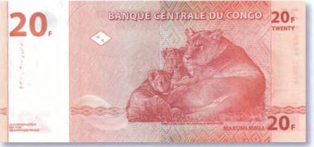
Берега первого по длине (708 км) и второго по глубине (1470 м) после Байкала пресноводного озера мира Танганьики окутаны многими тайнами. И одна из них — это нунда — огромный, страшный зверь с повадками льва и леопарда и жестокостью разъяренного буйвола. Но вот в 1920 г. жуткий нунда вдруг оставил свое место в легендах края и неожиданно объявился в небольшой рыбацкой деревеньке на берегу Танганьики.
Все началось с того, что как-то раз пропал дежуривший ночью участковый, а утром люди обнаружили его до неузнаваемости изуродованный труп. Вначале в убийстве заподозрили обычного льва. Однако львов в той местности уже давным-давно не встречали. Потом в руке убитого нашли клок шерсти, который походил на леопардовую. А вскоре отыскались и свидетели ночного кошмара. Ими оказались два аборигена, которые днем раньше собирались поживиться за счет своих односельчан. Иными словами, обворовать спящих. Но им помешал тот самый полицейский, которого поутру нашли мертвым. Блюститель порядка погнался за ворами-неудачниками. Но в какой-то момент из темноты выскочило огромное чудище и, схватив участкового, потащило прочь. Со слов напуганных происшествием беглецов, жуткий зверь не был ни леопардом, ни обычным львом. Это был нунда!..
Следующей ночью чудовище убило еще одного полицейского. Оно буквально разорвало его на куски. На ременной пряжке погибшего были обнаружены царапины от когтей и очередной пучок длинных волос. Прибывшие на место происшествия специалисты установили, что найденные волосы не принадлежали ни одному из известных видов африканских кошачьих. Это был какой-то совершенно новый вид этих крупных хищников.
В последующие месяцы неизвестный зверь убил в округе еще нескольких человек. И, несмотря на все предпринятые властями попытки поймать его, продолжал свой террор. Хищнику подкладывали отравленную приманку, устраивали западни, ставили капканы. Но все было безрезультатно. Правда, несколько позже нападения нунды прекратились сами собой.
Превосходное изображение царя зверей украшает старинную бону Эфиопии в 50 талеров 1932 г. (рис. 194).
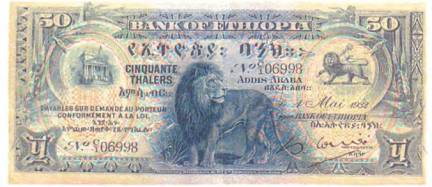
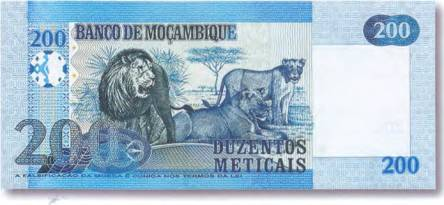
Африканскому льву посвятил одну из своих банкнот и Мозамбик. Это купюра номиналом в 200 метикалов 2006 г. (рис. 195).
Помимо быстро обрастающих невероятными подробностями слухов, в распоряжении исследователей-крипотозоологов имеются и более серьезные свидетельства встреч с крупными дикими кошками. К ним относятся рассказы опытных охотников на львов и леопардов, которым нет смысла вводить ученых в заблуждение. В 1937 г. английский журнал «Дискавери» («Discovery») напечатал о встрече одного европейского путешественника по Африке с его старым знакомым — местным охотником. Прежде они не раз вместе ходили на хищников. Абориген оказался сильно покалечен каким-то зверем. На вопрос европейца, уж не лев ли это был, раненый ответил: «Нет, это был мнгва (еще одно имя для нунды)»!
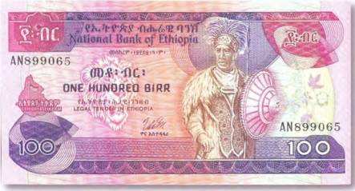
На эфиопской банкноте в 100 бирров 1976 г. (рис. 196), помимо гривастой головы царя зверей, можно увидеть и то оружие, с которым эфиопы в прошлом охотились на этого опасного зверя. Вооруженные одним копьем африканцы бесстрашно вступали в единоборство с хищником. А потом украшали львиной гривой свой головной убор и одежду.
У многих африканских племен поединок со львом считался пробой мужества, а убивший зверя охотник мог рассчитывать, что его подвиг соплеменники никогда уже не забудут.
Особое место в фольклоре многочисленных племен Африки занимают звери-оборотни. Есть там и вер-крокодилы, и вер-гиены, и вер-леопарды. Ну и, конечно же, вер-львы. Все эти собратья классического вер-вольфа — волка-оборотня (старонемемецкий «вер»(wer) — «человек», вольф (wolf) — «волк») — запросто уживаются в представлении африканцев со своими оригиналами из мира животных.
В 1918 г. одна из деревень на севере Нигера подверглась нападению гиен. Население пребывало в страхе, ибо сразу заподозрило неладное. Люди решили, что без вмешательства колдовства тут не обошлось (некоторые племена верят, что колдуны в силах превратить человека в зверя). В это время в соседнем селении гостил некто капитан Шотт, который изъявил желание преследовать злобных гиен. В суеверия капитан никогда не верил, а потому в обществе местных охотников смело пустился по следу животных. Через некоторое время смельчаки оказались нос к носу с гиеной огромных размеров. Последовали выстрелы. Взвыв от боли, зверь бросился бежать. Кровавый след чудовища был хорошо заметен, и люди поспешили вдогонку. Каково же было их удивление, когда следы огромной гиены через какое-то время превратились в отпечатки босых человеческих ступней. А чуть позже Шотт и его спутники вышли к телу обнаженного человека. Неизвестный был мертв, а его нижняя челюсть оторвана ружейным выстрелом.
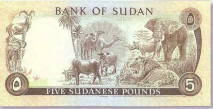
На банковском билете Судана в 5 фунтов 1975 г. показано сразу несколько представителей африканской фауны (рис. 197).
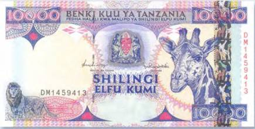
Как знать, может быть, и среди изображенных здесь зверей затесался один-другой оборотень!
Изучая хищников Серенгети, зоологи не раз становились свидетелями удивительных событий. Однажды они наблюдали, как леопард поймал газель Томсона и затащил ее на дерево. Опасаясь конкуренции со стороны гиен и львов, леопарды частенько прячут свою добычу на деревьях (для этого зверь выбирает ствол с развилкой, в которой он заклинивает тушку антилопы). А через некоторое время под этим самым деревом на отдых устроилось целое львиное семейство. Они тут же заинтересовались своим младшим собратом над головой, а главное его добычей…
Льва из Серенгети можно увидеть и на танзанийской боне в 10 000 шиллингов 1997 г. (рис. 198).
Леопарду на дереве стало не по себе. Перебравшись на другую сторону, он спустился на землю и быстро исчез. В тот же момент глава львиного семейства взобрался по стволу (там было не меньше 10 м!) и попытался вытащить антилопу из развилки. Но так как истинный хозяин добычи изрядно постарался, чтобы ее у него никто не уволок, все попытки льва оказались тщетны. Тогда царь зверей попросту разорвал тушку на две части и довольный собой спустился вниз.
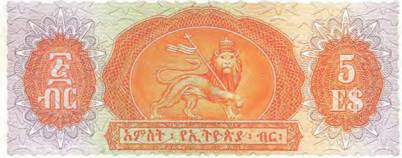
Изображение льва присутствует и на гербе Эфиопии, который занял оборотную сторону боны в 5 долларов 1961 г. (рис. 199).
Здесь царь зверей и в самом деле носит корону, а в лапах держит подобие царского жезла.
Африканский лев имеет две разновидности. Это — восточноафриканский лев (Panthera leo massaicus) и его собрат — берберский лев (Panthera leo barbaricus). При этом вторая разновидность практически полностью истреблена.
Прозвище «царь зверей» лев, возможно, получил благодаря своей пышной гриве. Наиболее шикарную гриву имеют берберские львы. С головы она переходит у них на грудь, а потом и вовсе на живот. Были замечены экземпляры, у которых длинная черная шерсть заканчивалась только у задних ног. Отдельные волосы гривы могут достигать 40 см в длину. А расти грива у самцов начинает с трехлетнего возраста. Ученые выяснили, что в ее появлении замешаны половые гормоны, поэтому не удивительно, что у кастрированных львов грива со временем исчезает и они становятся похожими на львиц. Но вот статному красавцу с банкноты Замбии номиналом в5 000 квач 2003 г. потеря шикарной гривы не грозит (рис. 200).
Самым выдающимся исследователем Африки общепризнанно считается Дэвид Ливингстон (1812–1873). В малоизученных и удаленных от цивилизации регионах Черного континента этот умный и смелый человек провел больше половины своей жизни — 33 года. Поэтому нет ничего удивительного в том, что его сердце теперь навсегда принадлежит Африке. Это не пустые слова. Сердце Ливингстона действительно предано африканской земле, в то время как его тело похоронено в Вестминстерском аббатстве Лондона. Какие невероятные трудности пришлось перенести ему во время своих многолетних путешествий, нам сегодня остается только догадываться. В Африке он сильно подорвал свое здоровье, заболев малярией. А после того как однажды наступил в своей палатке на змею, стал панически бояться этих пресмыкающихся. Но ни малярия, ни его страх перед змеями не могли сравниться с тем ужасом, который путешественнику пришлось пережить в пасти льва, где чуть было не оборвалась его жизнь. Случилось так, что хищник внезапно напал на исследователя и потащил его прочь (рис. 201).
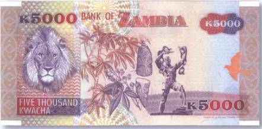
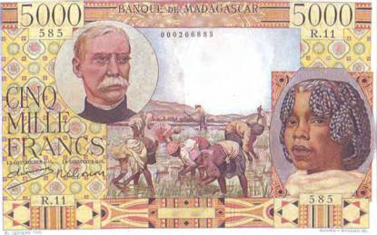
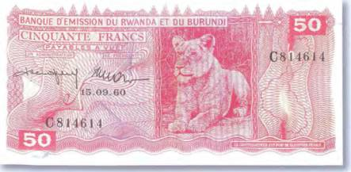
Вот как он сам описывал свои переживания: «Лев рычал мне в самое ухо и тряс меня так, как терьер трясет пойманную крысу. Шок ввел меня в ступор, который должна испытывать мышь, пойманная кошкой. Он вызвал некую невосприимчивость, когда перестаешь чувствовать и боль, и страх, и это несмотря на то, что я все еще был в сознании. Такое состояние испытывает пациент под воздействием хлороформа, когда он по-прежнему видит все, что происходит в операционной, но уже не чувствует ножа хирурга».
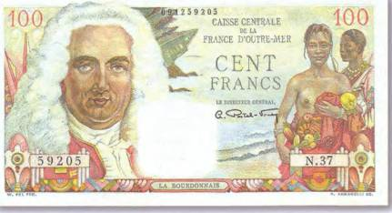
Однако все обошлось. Спутники Ливингстона вовремя пришли ему на помощь и прогнали льва.
К сожалению его потомков, портрет этого великого путешественника пока так и не попал на бумажные деньги Африки. Чего нельзя утверждать о других африканистах. Их лица можно видеть на банкнотах Мадагаскара номиналом в 5000 франков 1950 г. (рис. 202) и Французской Экваториальной Африки в 100 франков 1947 г. (рис. 203).